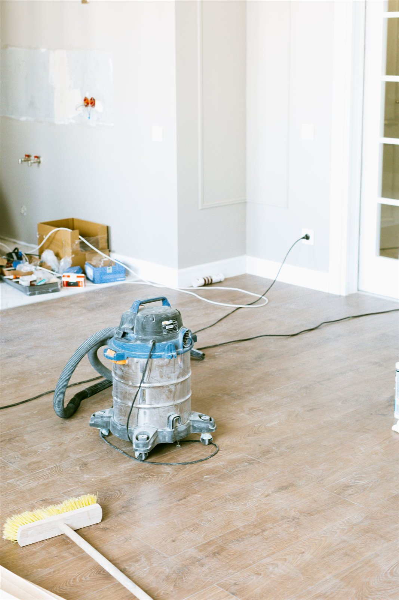
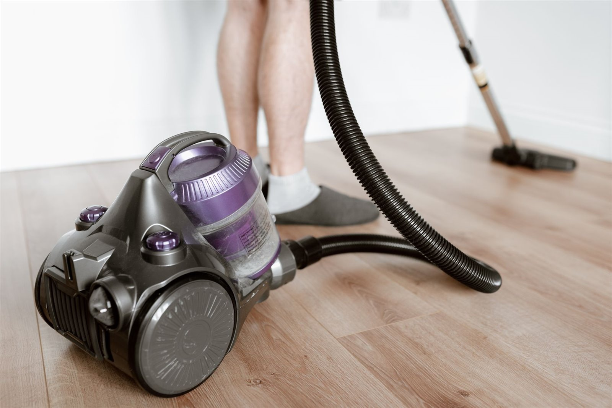
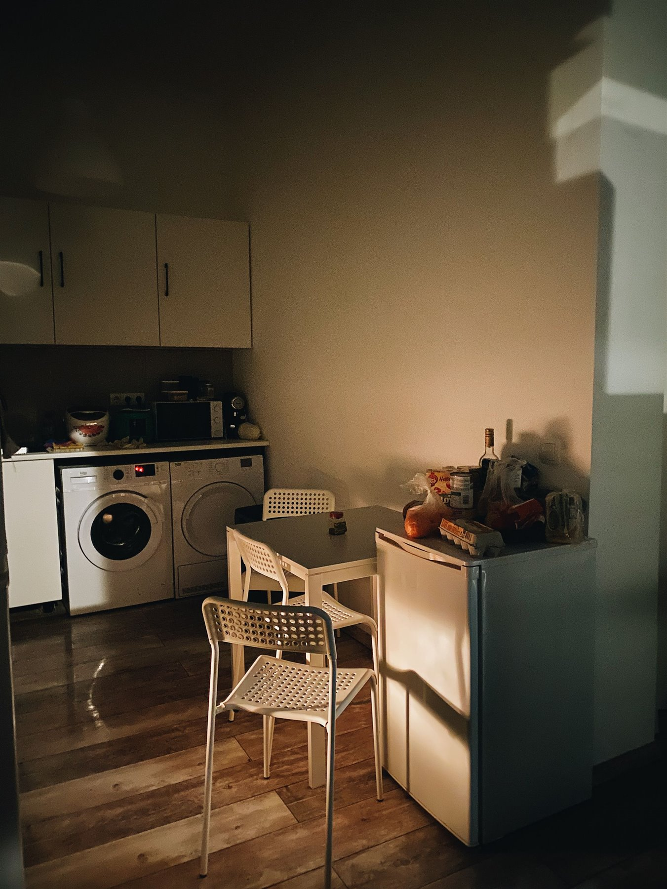

Magyar és angol egyeztetés tulajdonosokkal, Airbnb-házigazdákkal, irodákkal és ingatlankezelőkkel. Hungarian and English coordination with owners, Airbnb hosts, offices and property managers.
Takarítási szolgáltatás Budapesten
Cleaning services in Budapest
Lakás-, Airbnb- és irodai takarítás Budapesten, átlátható szervezéssel. Cleaning Services Budapest for apartments, Airbnb homes and offices.
Rendszeres lakástakarítás, nagytakarítás, költözés előtti vagy utáni takarítás, Airbnb vendégváltás, irodai takarítás és felújítás utáni rendbetétel budapesti ingatlanokhoz. Magyar és angol egyeztetés, fotós visszajelzés és praktikus feladatlista tulajdonosoknak, kezelőknek és házigazdáknak. Apartment cleaning Budapest, property cleaning Budapest, Airbnb cleaning Budapest, deep cleaning Budapest, office cleaning Budapest and move out cleaning Budapest, organised for owners, hosts and managers who need clear communication, photo updates and reliable preparation before use.

Mire figyelünk?
What matters
Tiszta átadás, követhető feladatlista, fotós visszajelzés.
Clean handover, clear task list and photo updates.
Kérés szerint fotók a kiinduló állapotról, a fontos részletekről és az átadásra kész eredményről. Photo updates can show the starting condition, important details and the handover-ready result.
Budapesti lakásokhoz, irodákhoz, rövid távú kiadáshoz és távol élő tulajdonosok ingatlanaihoz igazítva. Adapted to Budapest apartments, offices, short-term rentals and properties owned from abroad.
Az oldalon szereplő képek illusztrációk, amelyek tipikus munkafolyamatokat és várható eredményeket mutatnak. The images on this website are illustrative examples showing typical work processes and expected results.
01
Miért fontos a professzionálisan szervezett takarítás? Why professional cleaning matters
Egy budapesti lakás, iroda vagy Airbnb-ingatlan tisztasága közvetlenül befolyásolja az első benyomást. A jó takarítás nem csak felmosás: előre tisztázott hozzáférés, helyiségenkénti feladatlista, higiéniai fókusz, időzítés és használatra kész átadás. Clean presentation directly affects how a Budapest apartment, office or Airbnb property is judged. Good cleaning is not just mopping: it needs clear access, a room-by-room task list, hygiene focus, timing and a handover-ready finish.
Kevesebb félreértésFewer misunderstandings
A feladatokat előre egyeztetjük: mely helyiségek fontosak, van-e extra zsíros konyha, vízköves fürdő, felújítási por vagy vendégérkezési határidő.Scope is clarified in advance: which rooms matter, whether there is a greasy kitchen, limescale, renovation dust or a guest-arrival deadline.
Jobb átadási állapotBetter handover condition
Költözés, vendégváltás vagy megtekintés előtt a tiszta padló, fürdő, konyha, üvegfelület és pormentes bútor sokat javít az összképen.Before move-in, guest turnover or viewing, clean floors, bathroom, kitchen, glass surfaces and dust-free furniture make a meaningful difference.
Távolról is követhetőEasy to follow remotely
Külföldön élő tulajdonosoknál és ingatlankezelőknél különösen hasznos, ha a kiinduló állapot és a kész eredmény fotókon is látható.For owners abroad and property managers, it is especially useful when the starting condition and final result can be checked with photos.
02
Milyen takarítási munkákban segítünk? Cleaning services we can help with
A munka tartalmát mindig az ingatlan állapota, a határidő, a hozzáférés és a kívánt átadási szint alapján érdemes pontosítani. A cél a praktikus, tiszta, használatra kész állapot. Scope should be matched to the property condition, deadline, access and required handover standard. The goal is practical, clean, ready-to-use presentation.
Rendszeres lakástakarításRegular apartment cleaning
Lakott vagy rendszeresen használt budapesti lakások alapvető rendben tartása: padlók, felületek, konyha, fürdő és gyakran használt terek.Regular apartment cleaning in Budapest for lived-in or frequently used homes: floors, surfaces, kitchen, bathroom and high-use areas.
NagytakarításDeep cleaning
Alaposabb takarítás, amikor a normál körnél több figyelmet igényel a konyha, fürdő, por, vízkő, szekrényfelület vagy régóta halogatott részlet.Deep cleaning Budapest support when the kitchen, bathroom, dust, limescale, cabinet surfaces or long-postponed details need more attention.
Költözés előtti és utáni takarításMove-in and move-out cleaning
Üres vagy részben kiürített lakások rendbetétele átadás, beköltözés, bérlőváltás vagy eladás előtti megtekintés előtt.Move out cleaning Budapest and move-in preparation for empty or partly emptied apartments before handover, tenant change or sale viewing.
Airbnb vendégváltásAirbnb turnover cleaning
Vendégérkezés előtti takarítás, ágyazás előkészítése, fürdő és konyha ellenőrzése, látható felületek és fotózható állapot.Airbnb cleaning Budapest support before guest arrival: presentation, bathrooms, kitchen, visible surfaces and a photo-ready condition.
Irodai takarításOffice cleaning
Kisebb irodák, tárgyalók, képviseleti terek és munkaterületek tisztább, rendezettebb állapotának fenntartása vagy látogatás előtti frissítése.Office cleaning Budapest for smaller offices, meeting rooms, representative spaces and work areas before visits or regular use.
Felújítás utáni takarításAfter renovation cleaning
Festés, javítás vagy kisebb felújítás után keletkező por, apró törmelék és felületi szennyeződés rendezése, mielőtt a helyiség újra használatba kerül.Cleaning after renovation, painting or minor repair work, with focus on dust, small debris and surface residue before the space is used again.
Üdülő- és ritkán használt lakásokHoliday home cleaning
Időszakosan használt budapesti lakások frissítése érkezés, hosszabb üres időszak vagy tulajdonosi látogatás előtt.Holiday home cleaning for Budapest apartments used periodically, before owner visits or after a longer empty period.
Ingatlan előkészítése vendégek előttProperty preparation before guests
Vendég, bérlő, vevőjelölt vagy irodai látogató érkezése előtt a legfontosabb látható részletek rendezése.Property cleaning Budapest support before guests, tenants, buyer viewings or office visitors, focused on the details people notice first.
03
Tipikus takarítási helyzetek budapesti ingatlanoknál Typical cleaning situations in Budapest properties
A takarítási igény ritkán csak egy helyiségről szól. Gyakran időzítéshez kötődik: vendég érkezik, bérlő költözik, irodai látogatás várható, vagy egy felújítás után gyorsan használhatóvá kell tenni a teret. Cleaning is rarely about one room only. It is often tied to timing: guests are arriving, a tenant is moving, an office visit is planned or a room must become usable again after renovation.
- Airbnb és rövid távú kiadásAirbnb and short-term rentalGyors, követhető felkészítés vendégérkezés előtt, ahol a fürdő, konyha, ágynemű és látható felületek különösen fontosak.Fast, trackable preparation before guest arrival, with special attention to bathrooms, kitchen, linen and visible surfaces.
- Bérlőváltás és költözésTenant change and movingÜres lakások, szekrények, padlók, fürdők és konyhák rendbetétele, hogy a következő használó tiszta állapotot kapjon.Cleaning empty apartments, cabinets, floors, bathrooms and kitchens so the next user receives a clean space.
- Felújítás utáni porPost-renovation dustFestés, faljavítás vagy kisebb szerelés után a finom por és nyomok eltávolítása gyakran külön munkát igényel.After painting, wall repair or small installation work, fine dust and residue often need a dedicated cleaning pass.
- Irodák és képviseleti terekOffices and representative spacesMunkaterületek, tárgyalók és vendégfogadó részek frissítése, amikor a rendezett megjelenés üzleti szempontból is fontos.Refreshing work areas, meeting rooms and visitor-facing spaces when clean presentation matters for business.





A képek illusztratív példák: tipikus takarítási helyzeteket és elvárt állapotot mutatnak, nem konkrét elkészült ügyfélmunkák.
These are illustrative examples showing typical cleaning situations and expected presentation; they are not presented as completed client projects.
04
Előtte-utána takarítási helyzetekBefore / After cleaning examples
A takarítási eredmény akkor hiteles, ha a változás reális: kevesebb por, tisztább konyha, használható fürdő, rendezett padló és átadásra kész állapot.A credible cleaning result is realistic: less dust, a cleaner kitchen, usable bathroom, orderly floors and a property ready for handover.
Felújítási por és nyomokRenovation dust and marks
Festés, fúrás vagy kisebb javítás után a finom por gyakran a padlón, szegélyeken, pultokon és kapcsolók körül marad.After painting, drilling or small repairs, fine dust often remains on floors, skirting, counters and around switches.
Használatra kész helyiségReady-to-use room
A cél nem steril látvány, hanem tiszta, áttekinthető helyiség, amelybe vissza lehet költözni, vagy amelyet vendégnek át lehet adni.The goal is not a staged fantasy, but a clean, clear room that can be used, shown or handed over to a guest.
Fotós visszajelzésPhoto updates
Távolról egyeztetett takarításnál kérés szerint fotók mutathatják, hogy a kritikus részek valóban rendezett állapotba kerültek.For remotely coordinated cleaning, photos can show that the critical areas have been brought into a clean, presentable condition.
05
Kinek segítünk?Who we help
A takarítás különösen akkor értékes, ha az ingatlan használatban van, vendég érkezik, tulajdonos távol él, vagy az átadásnak konkrét határideje van.Cleaning support is most useful when the property is in active use, guests are arriving, the owner is abroad or handover has a real deadline.
Külföldön élő tulajdonosokOwners living abroad
Fotók, hozzáférés, időzítés és átadás távolról is követhetően.Photos, access, timing and handover kept clear even from abroad.
Airbnb-házigazdákAirbnb hosts
Vendégváltás előtti állapot, gyors kommunikáció és látható részletek ellenőrzése.Guest-ready presentation, quick coordination and attention to visible details.
Irodák és céges terekOffices and business spaces
Tárgyalók, munkaállomások és vendégfogadó részek tisztább megjelenése.Cleaner meeting rooms, workstations and visitor-facing areas.
06
Takarítási ellenőrzőlistaCleaning checklist
A végleges lista az ingatlan állapotától függ, de ezek a pontok segítenek gyorsan eldönteni, mire kell fókuszálni.The final checklist depends on the property condition, but these points help clarify the useful focus quickly.
KonyhaKitchen
Pultok, mosogató, főzőlap, külső szekrényfelületek, látható zsírosodás, szemetes és padló.Counters, sink, hob, visible cabinet fronts, grease-prone areas, bin area and floor.
FürdőszobaBathroom
Mosdó, zuhany, kád, WC, tükör, vízkő, csaptelepek, padló és vendég számára feltűnő részletek.Sink, shower, bath, toilet, mirror, limescale, taps, floor and details guests notice quickly.
Szobák és közlekedőkRooms and hallways
Porszívózás, felmosás, portörlés, kapcsolók és látható felületek tisztítása.Vacuuming, mopping, dusting, switches and visible surfaces.
Üveg és tükrökGlass and mirrors
Tükrök, üvegfelületek, ujjlenyomatok és olyan részek, amelyek fotón vagy megtekintésen rögtön látszanak.Mirrors, glass, fingerprints and surfaces that show immediately in photos or viewings.
Por és felújítási maradványDust and renovation residue
Szegélyek, kapcsolók, ajtókeretek, padlósarkok és felújítás után megmaradó finom por.Skirting boards, switches, door frames, corners and fine dust after renovation.
Átadás előtti ellenőrzésPre-handover check
A legfontosabb látható pontok áttekintése, hogy az ingatlan vendég, bérlő vagy tulajdonos számára rendezettnek hasson.A final review of visible points so the property feels orderly for guests, tenants or owners.
07
Hogyan működik a folyamat?Step-by-step process
A takarítás akkor működik jól, ha már az első üzenetben látszik a helyszín állapota, a határidő és a kívánt végeredmény.Cleaning works best when the first message makes the condition, deadline and required outcome clear.
Fotók és rövid leírásPhotos and short brief
Küldjön néhány fotót, címet vagy kerületet, határidőt és azt, milyen állapotot szeretne elérni.Send a few photos, address or district, deadline and the condition you want to achieve.
Feladatlista pontosításaScope clarification
Tisztázzuk, mely helyiségek, felületek és problémák kerüljenek a feladatlistára.We clarify which rooms, surfaces and issues should be included in the task list.
Szervezett takarításOrganised cleaning
A munka az egyeztetett prioritások szerint halad, figyelve a határidőre és a hozzáférésre.Work follows the agreed priorities, with attention to deadline and access.
Fotók és következő lépésPhotos and next step
Kérés szerint fotós visszajelzés készül, és jelezzük, ha más karbantartási feladat is látható.Photo updates can be sent on request, and visible maintenance issues can be flagged separately.
08
Miért a Budapest Property Services?Why choose Budapest Property Services?
Budapesti ingatlanoknál a takarítás gyakran együtt jár hozzáféréssel, időzítéssel, fotós visszajelzéssel és kisebb karbantartási észrevételekkel. Ezt egy átlátható, praktikus folyamatban kezeljük.For Budapest properties, cleaning often involves access, timing, photo updates and noticing small maintenance issues. We handle this through a clear, practical workflow.
Budapesti fókuszBudapest focus
Belvárosi lakások, társasházi épületek, irodák és rövid távú kiadás gyakorlati helyzeteihez igazítva.Adapted to city apartments, residential buildings, offices and short-term rental situations in Budapest.
Magyar és angol egyeztetésHungarian and English coordination
Tulajdonosokkal, kezelőkkel, házigazdákkal és irodai kapcsolattartókkal is követhetően lehet egyeztetni.Owners, managers, hosts and office contacts can coordinate clearly in Hungarian or English.
Fotós visszajelzésPhoto updates
Kérés szerint a fontos részletekről fotók készülnek, ami távol élő tulajdonosoknál különösen hasznos.Photos can document important details on request, especially useful for owners living abroad.
Rendezett folyamatOrganised workflow
A feladatlista, hozzáférés, határidő és átadás nem külön szálakon fut, hanem egyben kezelhető.The task list, access, deadline and handover are handled together, not as separate loose ends.
Praktikus problémaészlelésPractical issue spotting
Ha takarítás közben javítandó apróság látszik, azt külön jelezzük, nem keverjük össze a takarítási feladattal.If a small repair issue is noticed during cleaning, it is flagged separately rather than mixed into the cleaning scope.
Reális kommunikációRealistic communication
Nem ígérünk irreális átalakulást. A cél a tiszta, rendezett, használható ingatlanállapot.We do not promise unrealistic transformation. The goal is a clean, orderly, usable property condition.
09
Gyakori kérdések a takarításrólCleaning services FAQ
Gyakorlati válaszok tulajdonosoknak, Airbnb-házigazdáknak, irodáknak és ingatlankezelőknek.Practical answers for owners, Airbnb hosts, offices and property managers.
Vállalnak rendszeres lakástakarítást?Do you offer regular apartment cleaning?
Igen, rendszeresen használt budapesti lakásoknál lehet egyeztetni visszatérő takarításról. A gyakoriságot az ingatlan használata, mérete és az elvárt állapot alapján érdemes meghatározni.Yes. Recurring apartment cleaning can be discussed for Budapest homes in regular use. Frequency should match the property size, usage and expected presentation standard.
Mi a különbség a normál takarítás és a nagytakarítás között?What is the difference between regular cleaning and deep cleaning?
A normál takarítás a rendszeresen koszolódó felületekre koncentrál. A nagytakarítás részletesebb: több időt igényelhet a konyha, fürdő, vízkő, por, szekrényfelületek és ritkábban takarított részek miatt.Regular cleaning focuses on surfaces that get dirty through normal use. Deep cleaning is more detailed and may include kitchens, bathrooms, limescale, dust, cabinet surfaces and less frequently cleaned areas.
Vállalnak Airbnb vendégváltás előtti takarítást?Do you handle Airbnb turnover cleaning?
Igen, Airbnb-ingatlanoknál a vendégérkezési időpont, hozzáférés és a szükséges feladatlista alapján lehet egyeztetni. Rövid határidőnél már az első üzenetben érdemes jelezni az érkezés idejét.Yes. Airbnb cleaning is coordinated around guest arrival time, access and the required task list. For short deadlines, include the guest arrival time in the first message.
Költözés után is tudnak takarítani?Can you clean after a move-out?
Igen, költözés utáni takarításnál különösen fontos, hogy üres-e a lakás, maradt-e bútor, milyen állapotban van a konyha és fürdő, illetve van-e átadási határidő.Yes. For move-out cleaning, it helps to know whether the apartment is empty, whether furniture remains, the kitchen and bathroom condition and the handover deadline.
Felújítás utáni portakarítást is vállalnak?Do you clean after renovation work?
Igen, kisebb felújítás, festés vagy javítás után lehet egyeztetni takarításról. Fontos jelezni, hogy finom porról, törmelékről, festéknyomokról vagy teljes helyiség-előkészítésről van-e szó.Yes. Cleaning after smaller renovation, painting or repair work can be discussed. Clarify whether the issue is fine dust, debris, paint marks or full room preparation.
Irodák takarítását is vállalják?Do you clean offices?
Igen, kisebb irodák, tárgyalók és képviseleti terek esetében lehet egyeztetni. A feladatot az iroda működése, hozzáférése és a kívánt időpont alapján kell pontosítani.Yes. Smaller offices, meeting rooms and representative spaces can be discussed. Scope depends on office use, access and preferred timing.
Külföldön élő tulajdonosként is kérhetem?Can I arrange cleaning while I am abroad?
Igen, ha a bejutás, a döntési jogosultság és a fizikai hozzáférés tiszta. Kérés szerint fotós visszajelzés segíthet követni, mi történt a helyszínen.Yes, when access, authority and entry details are clear. Photo updates can help you follow what happened on site.
Elég fotókat küldeni az ajánlatkéréshez?Are photos enough to request a quote?
Sok esetben igen, főleg ha látszik a konyha, fürdő, padló, bútorozottság és a problémás részek. Nagyobb vagy bizonytalan állapotú ingatlannál helyszíni pontosítás is indokolt lehet.Often yes, especially if the kitchen, bathroom, floors, furniture level and problem areas are visible. Larger or unclear properties may need on-site clarification.
Hoznak takarítószereket?Do you bring cleaning supplies?
Ezt előre kell egyeztetni, mert a feladat típusa és az ingatlan felszereltsége eltérő lehet. Ha speciális felület, erős vízkő vagy felújítási por van, azt külön jelezni érdemes.This should be agreed in advance because tasks and property equipment differ. Mention special surfaces, heavy limescale or renovation dust early.
Lehet sürgős takarítást kérni?Can I request urgent cleaning?
Sürgős munkát kapacitás, helyszín, hozzáférés és feladatméret alapján lehet vállalni. Vendégérkezésnél vagy átadásnál az időpontot már az első üzenetben küldje el.Urgent work depends on capacity, location, access and scope. For guest arrivals or handover, include the exact deadline in the first message.
Hogyan érdemes elindítani a megkeresést?How should I start the enquiry?
Küldjön 3-5 fotót, címet vagy kerületet, határidőt, hozzáférési információt és röviden írja le, normál takarításról, nagytakarításról, Airbnb vendégváltásról vagy költözés utáni takarításról van-e szó.Send 3-5 photos, address or district, deadline, access details and a short note explaining whether you need regular cleaning, deep cleaning, Airbnb turnover or move-out cleaning.
Következő lépésNext step
Küldjön néhány fotót az ingatlanról, és egyeztessük a takarítás reális tartalmát.Send a few photos of the property and let us clarify the right cleaning scope.
A legjobb kezdés: fotók a konyháról, fürdőről, padlóról és a problémás részekről, a budapesti cím vagy kerület, a határidő, a hozzáférés módja és a kívánt átadási állapot.The best start: photos of the kitchen, bathroom, floors and problem areas, the Budapest address or district, deadline, access details and the required handover condition.
3-5 fotó3-5 photosBudapesti cím vagy kerületBudapest address or districtHatáridőDeadlineHozzáférésAccess
+36 20 667 1832
Fotók küldése WhatsApponSend photos on WhatsApp
Telefonszám másolása
Ezermester szolgáltatásokHandyman services
KertfenntartásGarden Maintenance
Vissza a főoldalraBack to homepage
Elsődleges terület: Budapest és közvetlen környéke. Magyar és angol egyeztetés.Primary service area: Budapest and nearby locations. Hungarian and English communication.